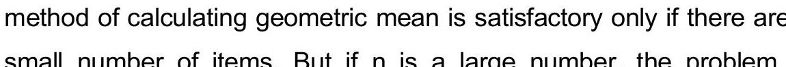

CHAPTER TWO
Methods Of Data Collection, Organization And Presentation (Continued)
2.7 Methods of data organization and presentation (Continued)
Graphical Methods (Continued)
Frequency Polygon
Used for presenting quantitative data (usually continuous) that is grouped into classes.
It is constructed by plotting the class midpoints against the corresponding frequencies and joining the points with straight lines.
The polygon is closed by extending the lines to the midpoints of the classes below the lowest and above the highest classes (assuming zero frequency in these extended classes).
Example: Using the data from Table 2.6 (Leisure time).
Figure 7: Frequency polygon curve on time spent for leisure activities by students
Cumulative Frequency Curve (Ogive)
Used for presenting quantitative data (usually continuous) that is grouped into classes.
It is constructed by plotting the upper class boundaries against the corresponding cumulative frequencies (or cumulative relative frequencies).
The points are joined by straight lines.
The curve starts at the lower boundary of the first class with a cumulative frequency of 0.
Example: Using the data from Table 2.6 (Leisure time).
| Time (hours) | Upper Boundary | Frequency | Cumulative Frequency |
|---|---|---|---|
| 10-14 | 14.5 | 5 | 5 |
| 15-19 | 19.5 | 8 | 13 |
| 20-24 | 24.5 | 12 | 25 |
| 25-29 | 29.5 | 10 | 35 |
| 30-34 | 34.5 | 5 | 40 |
Figure 8: Cumulative frequency curve for amount of time college students devoted to leisure activities
Line Graph
Used for presenting data that changes over time (time series data).
The horizontal axis represents time.
The vertical axis represents the value of the variable.
Points are plotted corresponding to the time and value, and joined by straight lines.
Example: Malaria parasite rates in Ethiopia, 1967-1979 Eth. C.
| Year (Eth. C.) | Rate (%) |
|---|---|
| 1967 | 5.2 |
| 1968 | 4.8 |
| 1969 | 6.1 |
| 1970 | 7.5 |
| 1971 | 8.0 |
| 1972 | 6.5 |
| 1973 | 5.8 |
| 1974 | 6.2 |
| 1975 | 7.1 |
| 1976 | 9.0 |
| 1977 | 10.5 |
| 1978 | 11.2 |
| 1979 | 12.0 |
Figure 9: Malaria parasite rates in Ethiopia, 1967-1979 Eth. c.
Scatter Plot
Used for presenting the relationship between two quantitative variables.
Each pair of observations $(x, y)$ is plotted as a point on a graph.
The horizontal axis represents one variable (x).
The vertical axis represents the other variable (y).
The pattern of points suggests the type and strength of the relationship between the variables.
Example: Relationship between height and weight of 10 students.
| Student | Height (x) | Weight (y) |
|---|---|---|
| 1 | 165 | 60 |
| 2 | 170 | 65 |
| 3 | 175 | 70 |
| 4 | 160 | 55 |
| 5 | 180 | 75 |
| 6 | 172 | 68 |
| 7 | 168 | 62 |
| 8 | 178 | 72 |
| 9 | 163 | 58 |
| 10 | 185 | 80 |
(Note: A scatter plot would typically be generated from this data, showing points for each student's height and weight.)
2.8 Exercises
- Classify the following variables as qualitative or quantitative; and if quantitative, as discrete or continuous:
- Socioeconomic status
- Number of hospital beds
- Weight gain in infants
- Temperature
- Response to treatment
- The following are the scores of 30 students in Biostatistics final exam:
70, 75, 80, 65, 72, 78, 85, 76, 68, 74, 82, 90, 71, 77, 88, 69, 73, 79, 81, 86, 74, 78, 83, 67, 70, 76, 84, 79, 72, 87
Construct a frequency distribution using Sturge's rule. Include class limits, class boundaries, midpoints, frequencies, relative frequencies, and cumulative frequencies. - Draw a histogram, frequency polygon, and ogive for the data in Exercise 2.
- The following table shows the distribution of blood groups among 100 individuals:
Construct a simple bar chart and a pie chart to represent this data.
Blood Group Frequency A 25 B 30 AB 15 O 30 Total 100